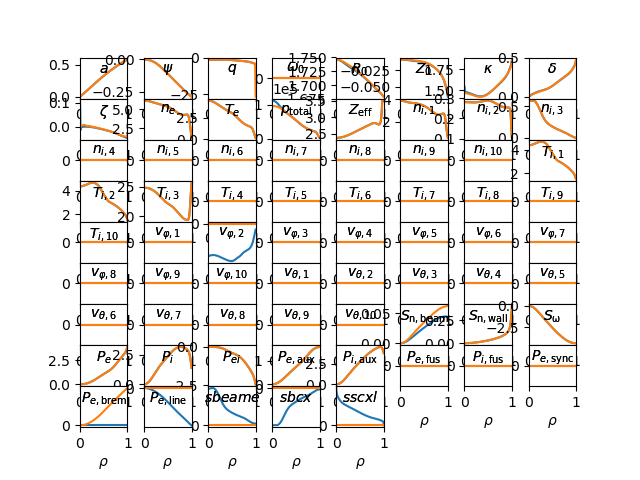

Note
Click here to download the full example code
gEQDSK + statefile to input.profiles¶
This example shows how OMAS can be used to generate a GACODE input.profiles file given a gEQDSK file and a ONETWO statefile.
Out:
source 0: qohm (0 MW) >> pow_e_aux
source 1: qdelt (2 MW) >> pow_ei
source 2: qrad (0 MW) >> pow_e_brem
source 3: qione (0 MW) >> pow_e_aux
source 4: qbeame (1 MW) >> pow_e_aux
source 7: qioni (0 MW) >> pow_i_aux
source 8: qcx (-1 MW) >> pow_i_aux
source 9: qbeami (4 MW) >> pow_i_aux
source 12: sion_thermal_e (0 #) >> flow_wall
source 13: sbeame (0 #) >> flow_beam
source 14: srecom_e (0 #) >> flow_wall
source 15: storqueb (-4 Nm) >> flow_mom
from __future__ import print_function, division, unicode_literals
from matplotlib import pyplot
import os
import tempfile
from omas import *
from omfit.classes.omfit_eqdsk import OMFITgeqdsk
from omfit.classes.omfit_onetwo import OMFITstatefile
from omfit.classes.omfit_gacode import OMFITgacode
gfilename = imas_json_dir + '/../samples/g145419.02100' # gEQDSK file
sfilename = imas_json_dir + '/../samples/state145419_02100.nc' # ONETWO statefile
ipfilename = imas_json_dir + '/../samples/input.profiles_145419_02100' # input.profiles generated with PROFILES_GEN
# load OMFIT classes
gEQDSK = OMFITgeqdsk(gfilename)
statefile = OMFITstatefile(sfilename)
ip = OMFITgacode(ipfilename)
# equilibrium ods from gEQDSK (and fluxSurfaces)
ods = gEQDSK.to_omas()
# append core profiles and sources based on ONETWO statefile
ods = statefile.to_omas(ods)
# generate new input.profiles file
ip1 = OMFITgacode(tempfile.gettempdir() + os.sep + ipfilename, GACODEtype='profiles').from_omas(ods)
# compare the input.profiles file generated by PROFILES_GEN and the one generated via OMFIT+OMAS
ip.plot()
ip1.plot()
pyplot.show()